Watch your agents work.
See every change.
A TUI for reviewing AI agent work with live file watching, git-aware diffs, and fuzzy search. See what changed, when, and why — without leaving your terminal.
uvx gamr
┃ M src/app.py │ + def handle_event(self): ┃ M src/models.py │ + self.state.update() ┃ A src/services/new.py │ - old_handler() ┃ D src/legacy.py │ + new_handler() ┃ src/widgets/ │ ┃ M tests/test_app.py │ @@ -42,6 +42,8 @@ ┃ README.md │ + assert result.ok
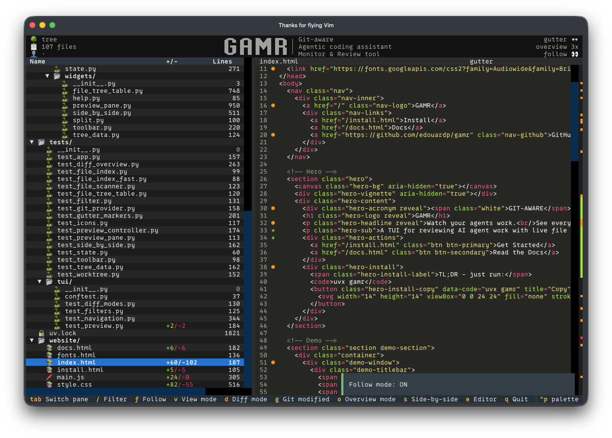
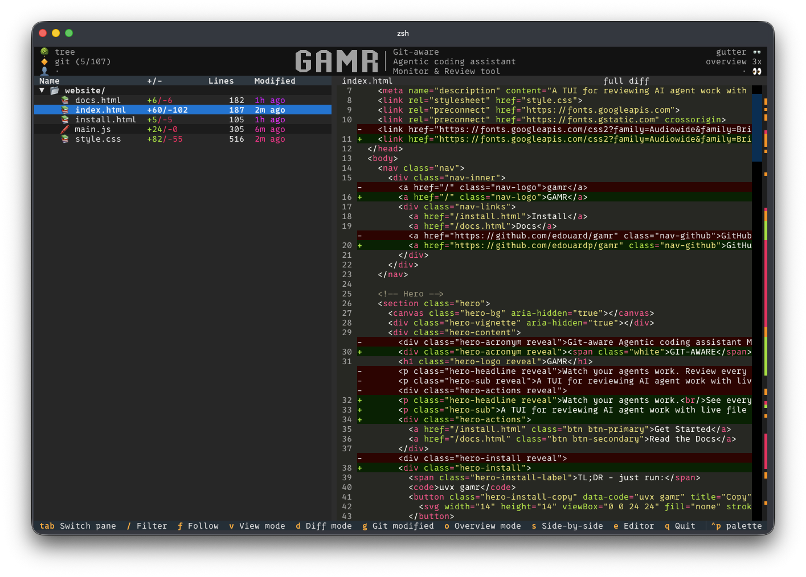
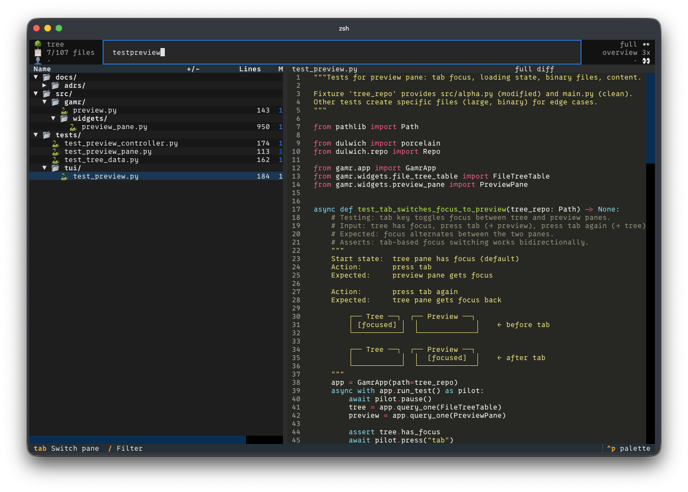
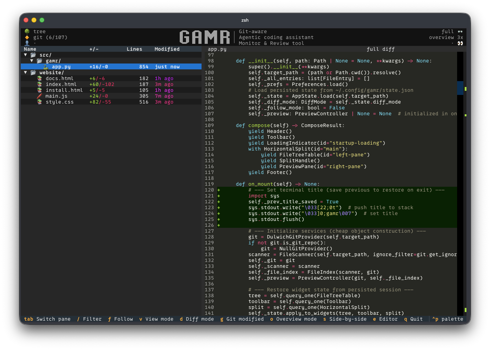
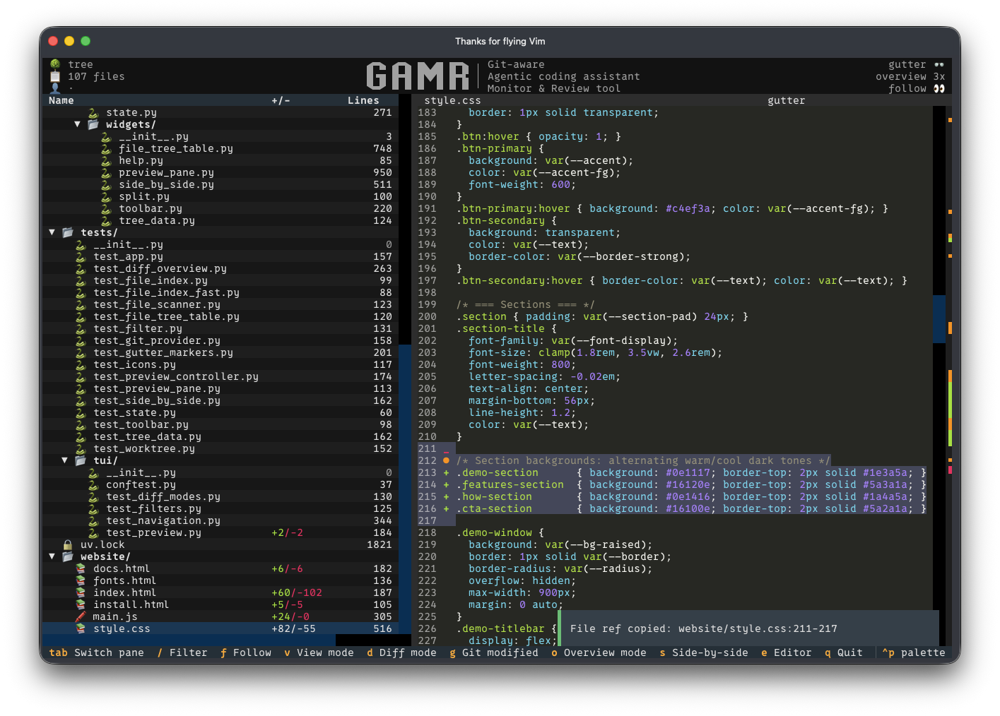
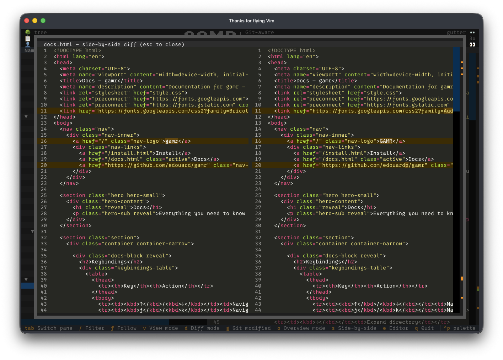
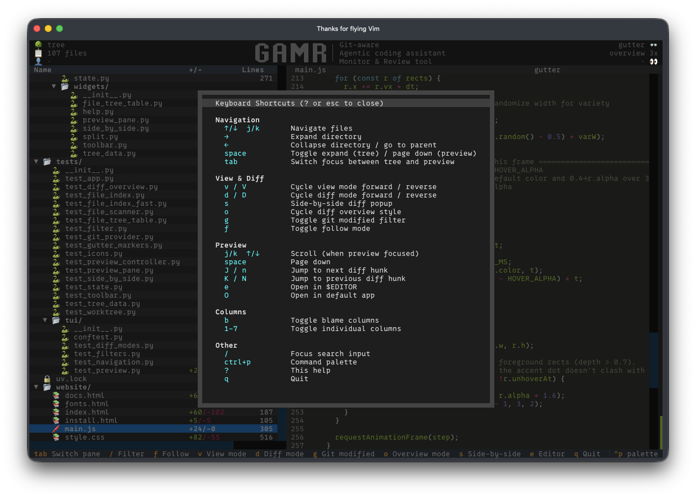
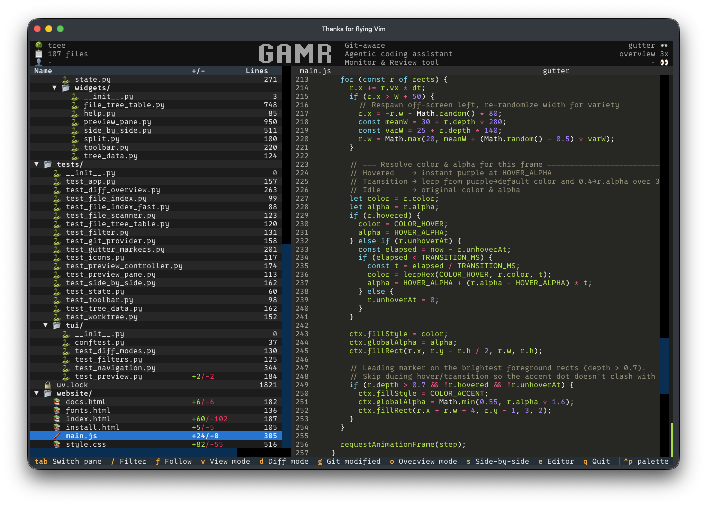
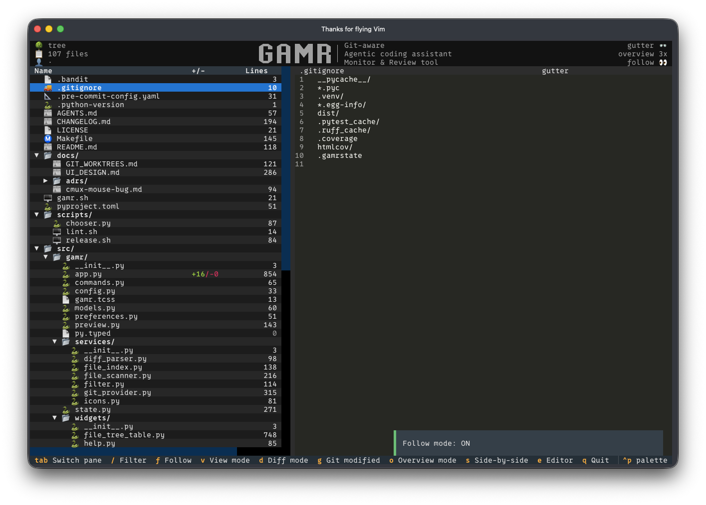
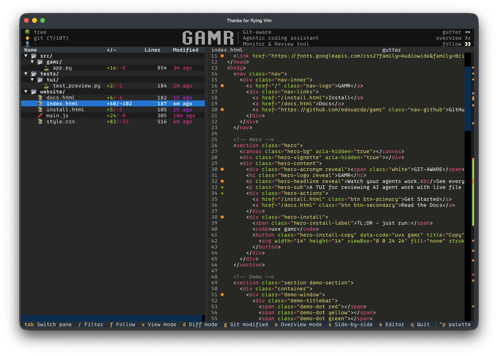
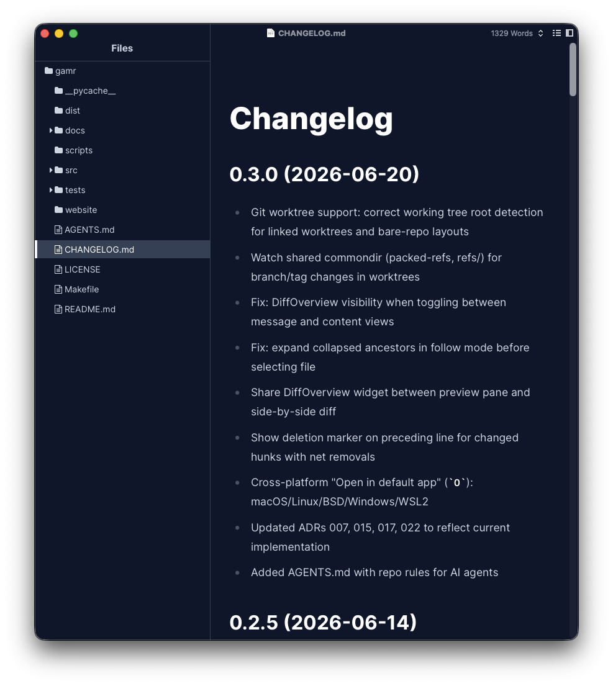
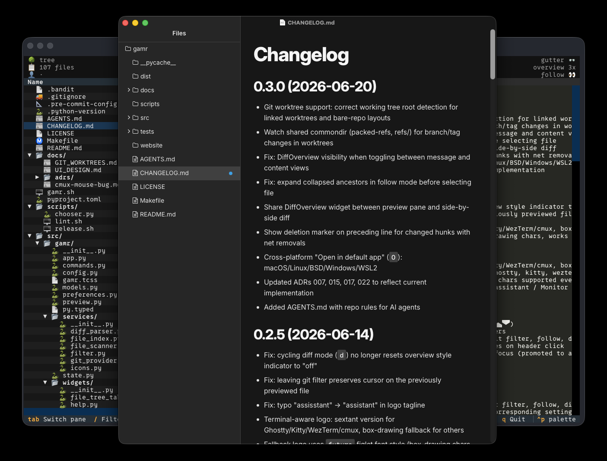
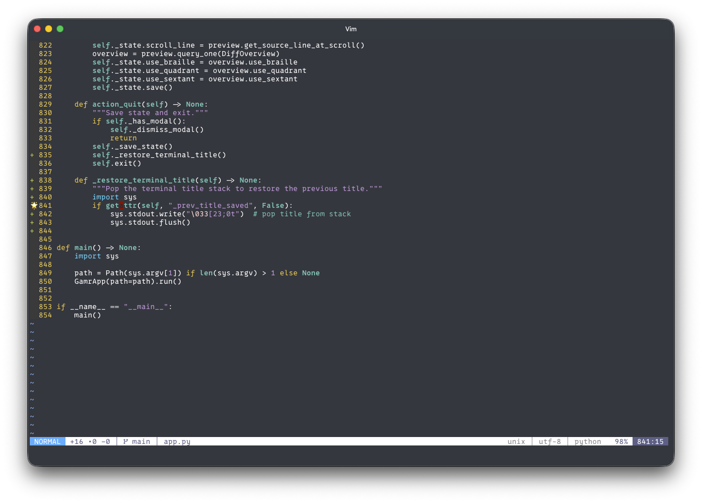
Tree updates instantly when files change. Watchdog + polling fallback means it always works.
Pure Python via Dulwich. Status indicators, three diff modes, blame data, worktree support. No git binary needed.
fzf-like filename filtering powered by RapidFuzz. Find any file in milliseconds.
Character-level change highlighting with live refresh. Old and new files aligned and syntax-highlighted.
Monokai-themed preview with line numbers, scrollable, and inline diff markers with colored backgrounds.
Full navigation without a mouse — vim-style bindings, command palette, and desktop-style tree. Plus full mouse support in iTerm2, Ghostty, Kitty, WezTerm, and Alacritty.
Your node_modules, build artifacts, and .env files stay hidden. Because you don't need to see 40,000 dependencies.
For the people who juggle linked worktrees and bare-repo layouts. You know who you are. It just works.
Auto-selects the last changed file so you can watch your agent code in real-time. Yes, it's basically a gimmick. Impress your friends and co-workers!
One keypress to hide everything unchanged. See only what your agent actually touched — modified, added, deleted. Cut the noise instantly.
Launch any file in your OS default app. Review that README in your favourite markdown editor without leaving the flow.
Open any file in your terminal editor for a quick fix. Hello nvim!
See something you want to query the agent about? Just select the lines and paste the file reference. src/app.py:81-85
Run uvx gamr ~/project and it detects git state, loads file icons, and starts watching.
Follow mode auto-selects the last changed file. See modifications appear as your agent writes code.
Three diff modes, blame data, and side-by-side comparison. Understand every change before committing.
Install gamr in seconds. Python 3.11+ required.